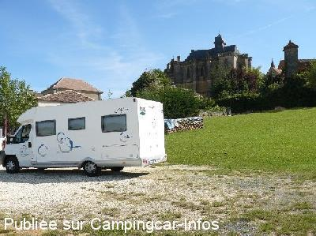
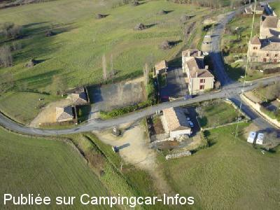

ASN = Aire de services avec stationnement nuit possible de :
BIRON
(N° 138)
Accès/adresse :
Centre Bourg
24540 BIRON
24540 BIRON
Latitude : (Nord) 44.63075° Décimaux ou 44° 37′ 50′′
Longitude : (Est) 0.8707° Décimaux ou 0° 52′ 14′′
Tarif : 2015
Services : 2 €
Jeton chez les commerçants
Type de borne : FLOT BLEU
Services :


Autres informations :
Ouvert toute l'année
Pas de services en période de gel
10 emplacements
Tél : +33(0)553 631 504

Le 02/06/2009 par am-jc.seigne

Le 23/01/2006 par bdc.henri
de
will
le 01/05/2014 :
de passage avril 2014 PK occupé par rouleaux de fil plus tas de sable plus borne HS depuis un moment
de passage avril 2014 PK occupé par rouleaux de fil plus tas de sable plus borne HS depuis un moment
de
Rolf Ca
le 16/03/2014 :
soweit mir bekannt, steht dort auf dem Parkplatz gegenüber der alten Schule ein Mini FlotBleu-Relais mit Jeton-Betrieb. Zuletzt im Aug.2013 bestätigt
soweit mir bekannt, steht dort auf dem Parkplatz gegenüber der alten Schule ein Mini FlotBleu-Relais mit Jeton-Betrieb. Zuletzt im Aug.2013 bestätigt
de
christian
le 20/05/2013 :
tres beau chateau mais a croire que l on ne veux plus de camping-car parking remplie de voitures si non belle vue
tres beau chateau mais a croire que l on ne veux plus de camping-car parking remplie de voitures si non belle vue
de
ourdinse
le 15/06/2011 :
De passage le 13/06/2011, 1 seul camping car sur l'aire avec nous. Trés beau panorama et bel emplacement. Merci à ce petit village de mettre a disposition ces moyens que beaucoup refuse encore.
De passage le 13/06/2011, 1 seul camping car sur l'aire avec nous. Trés beau panorama et bel emplacement. Merci à ce petit village de mettre a disposition ces moyens que beaucoup refuse encore.
de
José 83
le 23/09/2010 :
De passage en septembre, aire calme, agréable, gazonnée et de plus, on a entendu la nuit le rut des cerfs. Aire très commode vu l'espace si vous avez un toutou cavaleur...
De passage en septembre, aire calme, agréable, gazonnée et de plus, on a entendu la nuit le rut des cerfs. Aire très commode vu l'espace si vous avez un toutou cavaleur...
de
campingcariste89
le 16/06/2009 :
De passage en juin. Aire très propre calme. Nous étions le seul CC pour la nuit.
De passage en juin. Aire très propre calme. Nous étions le seul CC pour la nuit.
de
indien84
le 09/08/2007 :
Nous nous sommes arrêtés à Biron pour passer la nuit, Sinon, jolie vue et beau chateau.
Nous nous sommes arrêtés à Biron pour passer la nuit, Sinon, jolie vue et beau chateau.